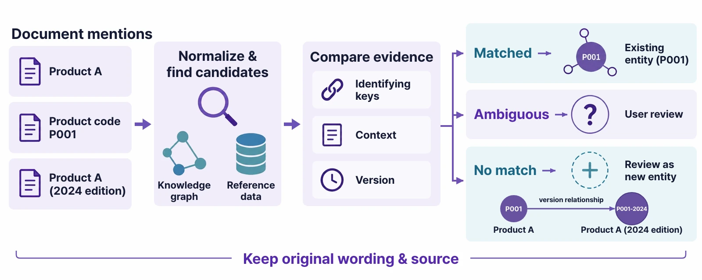

Our Products

Ontological Studio
A desktop studio where you build ontologies, ask them questions, act on them and use them as apps.
One installer holds the data fabric, the graph database and the agents.
macOS (Apple Silicon · Intel) · Windows 10/11 (x64) · Open source · Install guide · Step-by-step tutorial with videos
Answers are never in one place, and work doesn’t end with the answer
“Which finished products contain the part with the soldering defect, and who is the contact at that supplier?” — the answer to a question like this is scattered across quality reports, the purchasing ERP and the logistics system.
Once you have the answer, you still have to hold purchase orders, expedite shipments and keep an eye on the situation every day.
Ontological Studio connects this whole flow in one app. Connect documents and databases without moving the data, and an agent designs the ontology around the questions it must answer (Golden Questions) and the instructions it must carry out (Golden Commands).
Questions are answered with evidence by following relationships. Instructions become actions that call the APIs of your registered business systems, run after a person approves them,
and can be undone when needed. On the same ontology, you build business apps just by describing them — dashboards wired to widgets, or apps whose code an agent writes.
Demo 1 Build from a document — design the ontology, check it against Golden Questions, publish it and get answers with evidence (3:35)
Demo 2 Run actions — find the targets with a question, then approve, execute and cancel an action built from a Golden Command (3:39)
Demo 3 Code apps — describe an app and a coding agent writes it on top of the ontology (3:32)
Key Features
Connect → build → publish → ask → act → apps, all on the same ontology
How It Works
People say what they want and make the decisions. Agents handle design, queries and code; the executor runs actions once they are approved.
1. Connect
2. Build
3. Publish
4. Ask
5. Act
6. Apps
Golden Questions and Golden Commands
A build is measured by two things: what the ontology must answer, and what it must do. More in the tutorial
Golden Question — a question it must answer
A question this ontology must be able to answer, such as “Which finished products contain the part with the soldering defect?” The agent works backwards from the question to the concepts, relationships and sources it needs, designs the schema first, and once the build is done, runs the question itself to check that the expected answer and evidence come out.
Golden Command — an instruction it must carry out
An instruction to carry out on this ontology, such as “Switch the delayed shipments to urgent delivery.” The agent explores the APIs of your registered business systems and builds the action that carries it out, the compensation that undoes it, and the policy that decides who may use it on which targets, then checks them with a dry run.
How an ontology gets built
Guided by the intent and the Golden Questions, the agent repeats design → extract and link → run the questions → check. Once the criteria are met, a person reviews and publishes.



What’s in the installer
No separate Docker or Neo4j. When you start the app, the components below run together on your computer, and they stop when you quit.
| Component | What it does |
|---|---|
| PostgreSQL 16 + the Ontological extension | The graph store and the data fabric. Source database connectors (postgres_fdw, mysql_fdw, oracle_fdw, tds_fdw) read the virtual nodes. More about Ontological DB |
| Bolt gateway | The Neo4j-compatible Bolt protocol — the only way Studio, the Portal and apps reach the graph with Cypher. |
| Studio backend (with MCP) | The Build, Ask & Act, actions and apps screens, plus the MCP tools AI agents use. |
| Coding and build agents | Connects the Claude Code or Codex CLI on this computer through cliagents (no API key needed). Without one, it uses an OpenAI key. |
| Kinetic Action executor | Plan, policy check, approval, saga execution and compensation. It calls the business systems with tokens the app signs. |
| Ontological Portal | Cypher console, schema map, natural language → Cypher, completion. |
| Sample ontology and business systems | The “Supply Chain Operations” ontology with a purchasing ERP, a logistics WMS and a customer CRM — follow the videos step by step. |
Download
Install it and try it now
The first launch prepares the database, the sample ontology “Supply Chain Operations” and the sample business systems (purchasing ERP, logistics WMS, customer CRM). You can follow the videos step by step.
macOS
macOS 13 or later · Download the DMG for your Mac’s chip, open it and drag the app to Applications. (To check your chip: Apple menu → About This Mac)
Apple Silicon (M1 or later) (.dmg) Intel Mac (.dmg)- Open the DMG and drag Ontological Studio to Applications.
- Open the app. When macOS says “Apple could not verify ‘Ontological Studio’ is free of malware…”, click Done.
- Open System Settings → Privacy & Security, click Open Anyway next to Ontological Studio in the Security section near the bottom, and enter your password.
- In the dialog that appears, click Open. From then on the app opens normally.
The build is not notarized by Apple yet, so this is needed only the first time. On macOS 14 and earlier, you can also right-click the app and choose Open. The Intel Mac build is 0.1.1 (0.1.2 is on its way). Details: Install guide
Windows
Windows 10/11 (x64) · Run the installer.
Download for Windows (.exe)- Run the installer you downloaded.
- When “Windows protected your PC” appears, click More info, then Run anyway.
- Choose where to install and finish. No administrator rights needed.
You see this because the build is not code-signed yet. The Windows build includes the PostgreSQL connector only for now, and Claude Code needs Git for Windows. Details: Install guide
Installers: GitHub Releases · Source: uengine-oss/ontological-studio
Related Solutions
A Knowledge Graph Never Works Alone
Ontological Studio is the design tool that makes an organization’s knowledge explicit as a graph. Its output runs on the execution server of Ontologic Platform for analysis and automation, becomes, via MCP, the knowledge graph that Process GPT agents consult while doing their work, and gives the design and implementation agents of Robo Architect the grounding to understand the domain.
① Ontologic Platform
Design in Studio, execute on the Ontologic server
Ontological Studio works as the ontology design module of Ontologic Platform. The schema Studio creates (classes, relationships, join keys) and its data source mappings connect directly to the Ontologic execution server, where natural-language queries, root-cause analysis, What-if simulation and watch automation run.
Because design and execution share the same ontology, a schema fix is reflected in execution results right away, and the zero-copy binding carries straight through, so operational data is analysed with no separate ETL (Zero-ETL).


② Process GPT
The knowledge graph that agentic AI consults
The built ontology is exposed as an MCP server, and Process GPT deep agents, while carrying out their work,
use ontology_query to explore this knowledge graph in real time.
They cite regulatory clauses and operational data together, and decide only on the basis of knowledge made explicit in the ontology, completing hallucination-free business automation.
In an AI-Native Enterprise where AI agents decide and act on their own, what is most lacking is not model performance but “what to base decisions on.” The ontology states that grounding in the organization's own language, and Process GPT executes real work on top of it. This combination, where designed knowledge is executed directly, is the most powerful scenario.
③ Robo Architect
A knowledge graph that carries through to design and implementation
The domain knowledge graph built by Ontological Studio becomes the knowledge graph consulted by the design and implementation agents of Robo Architect. Concepts and relationships extracted from documents and operational data ground the design of Aggregates and domain events, so the AI generates code with an accurate understanding of the domain.
The two products exchange knowledge and models freely — Ontological Studio’s knowledge flows into Robo Architect’s specifications, and the models Robo Architect designs accumulate back into the graph. Knowledge and specifications circulate as one flow.

Get started today!
Ontological Studio is open source. With just a few documents or database connection details, you can build your own knowledge graph.
One installer for macOS and Windows — no Docker, no Neo4j.
Have more questions?
If you would like to learn more about Ontological Studio or have any questions, please contact us anytime.